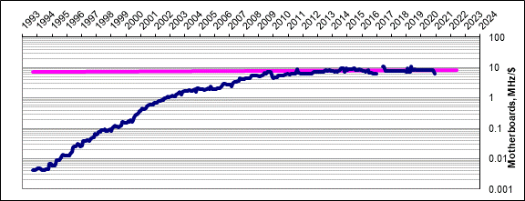
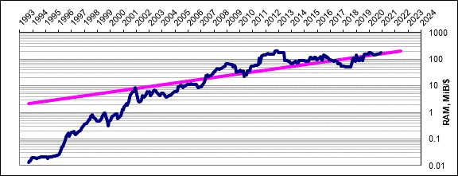
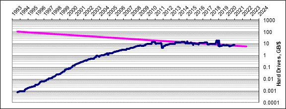
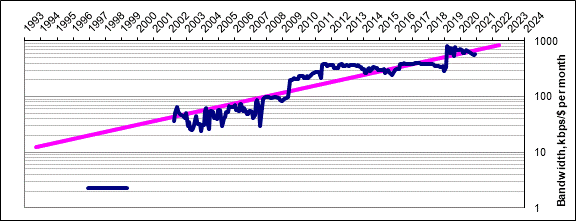
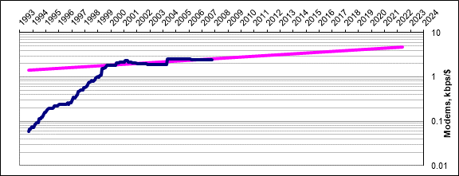

Trends in Computing (2011)
— Rik Blok, 2011-03-20 (with data thru 2021-01)
Note
I wrote the text on this page between 1993 and 2011, when computer components were changing rapidly. I continued collecting data and updating the statistics and figures thru 2021, when the trends were already showing a dramatic slowdown. Now, looking back on this page from 2025, it’s remarkable how different the current trends are.
— Rik Blok, 2025-02-06
Years ago I heard it said that computers were doubling in performance every year or two (a claim related–but not identical–to Moore’s Law); that is, two years from now you could buy a computer twice as powerful/fast as today for the same price or less. I was curious to see if this was true so I started tracking the prices of individual components on a monthly basis. I am biased towards [[wp>Wintel]] PCs with a total price under $2000 Canadian, so I track components typical for such machines.
Motherboards
 Figure 1: Historical motherboard performance
- Units: MHz/$, megaHertz per dollar (Cdn)
- Doubling time: 1564 ± 5180 months1 (flat)
Motherboard performance, measured in MHz/$, is currently doubling every 1564 ± 5180 months1 (flat). Notice that I am measuring performance for the motherboard as a whole, not just the CPU. There have been fluctuations but the trend does look more or less exponential. A friend of mine (Andy Horton) pointed out there was a noticeable dip every year around December. This is most likely due to prices being jacked up for Christmas sales.
Processor speed depends on how many transistors can be fit on a chip, which has a theoretical maximum set by quantum mechanics. If the circuits get too close together the electrons will start “tunneling” through barriers and the chip won’t function properly. I’m not sure what the limit is, but as we approach it, expect the doubling time to stretch out–at least until manufacturers find a new way to get around (or take advantage of) this problem.
Of course, every new generation of processor may perform better (or worse!) than the last, even at the same clock speed so I weighted the clock speed by an estimation of how fast each chip architecture is compared to a current chip:
| Architecture | Speed Factor |
|---|---|
| i8086 | 0.0025 |
| i286 | 0.011 |
| i386sx | 0.016 |
| i386dx | 0.023 |
| i486dx | 0.047 |
| i486dx2 | 0.039 |
| i486dx4 | 0.031 |
| Pentium | 0.093 |
| Pentium MMX | 0.11 |
| Pentium 2 | 0.12 |
| Pentium 3 | 0.14 |
| AMD Duron | 0.14 |
| AMD Athlon XP | 0.13 |
| Intel Core 2 Duo | 0.51 |
| ntel Core 2 Quad | 0.72 |
| Intel Core i5 | 0.90 |
| Intel Core i7 | 1.00 |
Table 1: Estimated relative speed factors of past chip architectures (if running at the same clock speeds). Athlon speed is scaled by performance rating (eg. 1800+) not actual clock speed (eg. 1.53GHz).
So a 2.4GHz Core 2 Duo E6600 will perform about five times as fast as an Athlon XP 2000+.
Comparing different processors opens up a can of worms such as the impact of other components (eg. RAM, front-side bus, etc.) on performance. But, I don’t really care about all this…I just want to get an estimate of the typical speed of these machines so I just get my numbers by comparing application and game benchmarks for typically-configured machines.
RAM
 Figure 2: Historical RAM performance
RAM performance, measured in MiB/$, is currently doubling every 53 ± 19 months…but it’s a real wild ride! Notice that the graph is virtually flat until November 1995 and then explodes upwards. As I understand it this is due to a monopoly on SIMM modules which toppled around then. At the time (October 1995) the doubling time was a whopping 53 ± 9 months! After some fluctuations when the market opened up, it looks like RAM performance grew at a natural rate for a while.
There was an huge hiccup at the end of 2001 which was apparently due to price fixing.
Again, performance depends on how many transistors can be fit on a chip which has a theoretical maximum. Unlike motherboard performance, however, I don’t expect this to slow down the RAM performance doubling time because–Hey!–the manufacturers can always just add more memory banks, right?
Storage
 Figure 3: Historical storage performance
- Units: GB/$, gigabytes per dollar (Cdn)
- Doubling time: -85 ± 34 months1 (declining)
Hard drive capacity, measured in GB/$, is currently doubling every -85 ± 34 months (declining). The graph was showing exponential growth until late 2011 when flooding in Thailand caused production shortages.
Bandwidth
 Figure 4: Historical bandwidth performance
- Units: kbps/$/month, kilobits per second per dollar (Cdn) per month
- Doubling time: 56 ± 14 months1
Bandwidth (the speed of an internet connection) is difficult to measure because it depends on your internet provider, and current conditions (eg. is there heavy usage?) so I don’t have as good of data. But the data I do have suggests the doubling time for bandwidth performance (versus monthly fees) is 56 ± 14 months. I calculate my bandwidth by doing speed tests weekly and then taking the median value from the last five weeks to reduce the noise.
Modems
 Figure 5: Historical modem performance
- Units: kbps/$, kilobits per second per dollar (Cdn)
- Doubling time: 200 ± 77 months1
They’ve stopped advertising dial-up modems in my local sources so I’m not tracking this technology anymore. But before they were obsoleted the estimated doubling time for modem performance was 200 ± 77 months. But you just have to look at the graph to realize exponential growth isn’t a good fit. Did modem performance plateau due to technical or economic factors, I wonder?
Note that 56kbps modems never actually ran at that rate, it’s just a theoretical maximum (and a nice marketing ploy). The fastest my modem ever connected at (and maintained) was 46kbps so that’s the speed I used when calculating performance.
The Bottom Line
The average doubling time for the motherboard, memory, and hard drive is currently 511 months. Sounds good, right? Well, the down side is that you’ll have to keep laying out cash to keep your computer current. In that amount of time your brand-spanking new computer will only be half as “good” as the latest. (Actually I’m neglecting a lot of components like monitors and sound cards, but this should still be a good estimate.) This is the same as saying a computer loses 1.6% of its value each year. To maintain it you will have to regularly lay out some cash for upgrades.
If you’re laying out that kind of cash you might as well buy an entirely new system every 743 months! (That’s neglecting the money you’ll get back for selling your old computer. If you factor it in then you should replace your system even more often–every time the performance doubles, every 511 months!) Most people use a combination of the above strategies: they upgrade a bit to slow the decline of their system, and when it just gets too outdated they replace it.
When buying a new system, be careful of unscrupulous vendors that may take advantage of this rapid drop in prices to make money. After the price is settled and the down payment made, some vendors may delay ordering the system for a week or two. In the meantime the value of your system drops marginally. Then the vendors buy at the lower price, but sell to you at the original higher price, and skim a profit off the top. For a \$2000 machine, a two week delay will earn them roughly \$1.96. Not much, but still something to watch out for.
Math Stuff
The component prices come from advertisements in local shops. I compiled the data and made estimates of what the actual doubling time, \(\tau\), is, as follows. If there is a doubling trend over time, \(t\), then the performance (per dollar), \(P(t)\), should increase as
\[ P(t) = P(0) 2^{t/\tau}. \]Taking the logarithm of both sides gives
\[ \log_2(P(t))=t/\tau + \log_2(P(0)) \]which is just the straight line equation
\[ y(t)=mt+b \]where \(m=1/\tau\). So all we have to do is take the logarithm of the performance data and fit it to a straight line to get the parameters \(m\) and \(b\), which allow us to calculate \(\tau\). The exact calculations for fitting to a straight line can be found in any statistics textbook or try Press et al. ( Citation: 1992 Press, W., Teukolsky, S., Vetterling, W. & Flannery, B. (1992). Numerical Recipes in C: The Art of Scientific Computing (Second). Cambridge University Press. Retrieved from http://www.nr.com/ ) , Chapter 15.
Also given therein is a procedure to estimate the uncertainties in the parameters even without knowing the measurement errors. So it is possible to calculate the uncertainty in the slope \(m\) which is related to the uncertainty in the doubling time by
\[ \frac{\sigma_\tau}{\tau} = \frac{\sigma_m}{m}. \]By using this method the “goodness of fit” is incorporated into the doubling time uncertainty: a large uncertainty means a poor fit.
References
- Press, Teukolsky, Vetterling & Flannery (1992)
- Press, W., Teukolsky, S., Vetterling, W. & Flannery, B. (1992). Numerical Recipes in C: The Art of Scientific Computing (Second). Cambridge University Press. Retrieved from http://www.nr.com/